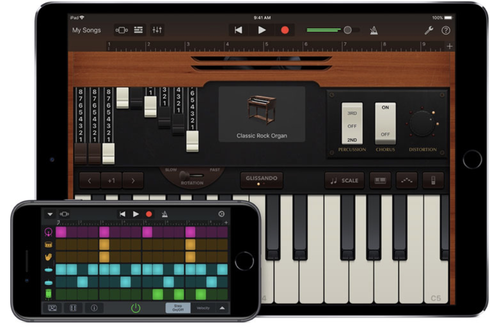

GarageBand is a free application created by Apple.
GarageBand is a fully equipped music creation studio right inside your Mac — with a complete sound library that includes instruments, presets for guitar and voice, and an incredible selection of session drummers and percussionists.
With Touch Bar features for MacBook Pro and an intuitive, modern design, it’s easy to learn, play, record, create, and share your hits worldwide. Now you’re ready to make music like a pro.
